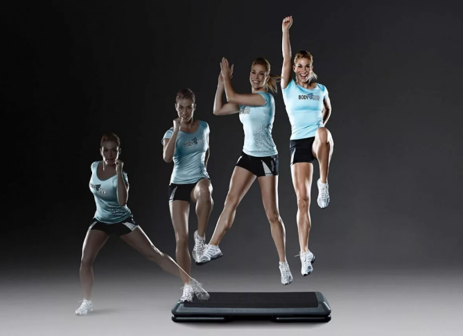
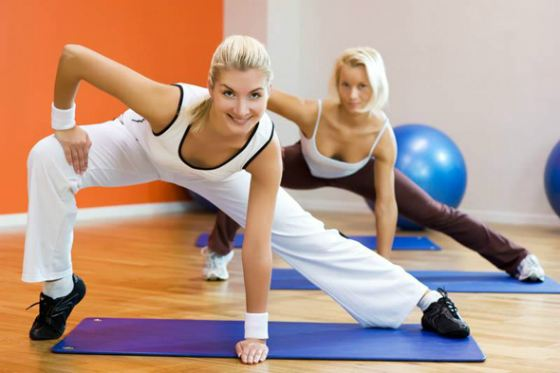

Если вы боретесь с лишними килограммами, которые сосредоточены преимущественно в нижней части тела, вам стоит попробовать step aerobics – отдельный подвид спортивной аэробики. Его придумала Джин Миллер, которую считают основоположницей данного направления. В 1989 году с целью восстановления после травмы колена она зашагивала на ящик для молочных продуктов, чтобы укрепить связки, и разработать сустав. Так и появилось новое течение, которое помогает бороться с ожирением и стрессом.
Степ аэробика – это специализированный тренинг, который идеально подходит для похудения, проработки мышц ног и ягодиц. Все упражнения комплекса выполняются на небольшой возвышенности, что способствует максимальному жиросжиганию. Тренировка проходит под ритмичную музыку без перерывов и отдыха. Занятие на степ платформе состоит из набора базовых шагов. Они объединены в комбинации и выполняются в разных вариациях, которые отличаются по типу сложности. За счет изменения высоты шага уменьшается или увеличивается нагрузка.
Степ аэробика - это реальная возможность с пользой провести время и сбросить лишний вес. За час можно сжечь до 500 ккал и добиться следующих результатов:
Если вы еще не занимались на кардиотренировках, сначала вам стоит выбрать программу для начинающих. Такой уровень является адаптационным: упражнения выполняются не в полную силу и с определенной амплитудой. Опытным спортсменам подойдет средний уровень с более высокой нагрузкой. Комбинации состоят из разных движений, направленных на шлифовку рабочих мышц. Особой популярностью пользуются комби-тренировки, которые дополнены силовыми комплексами. Они рассчитаны на людей, которые занимаются спортом не один год.
{kind=link}
{kind=link}